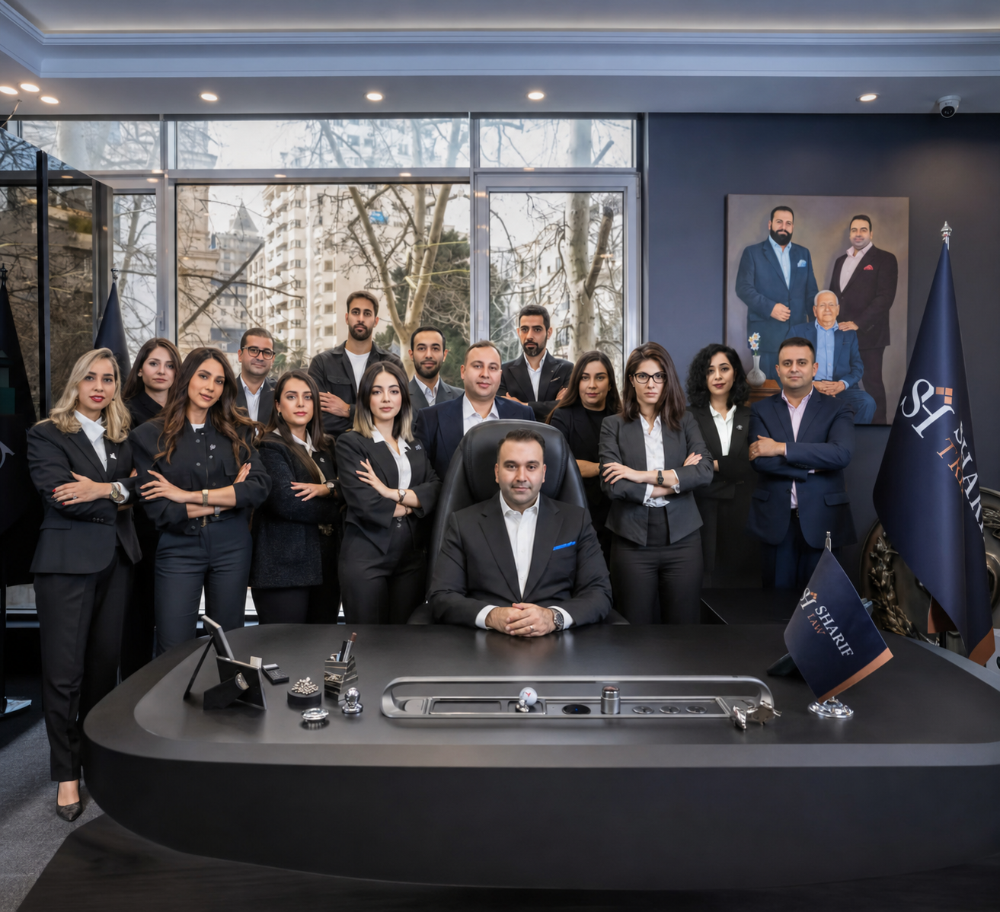

INSIGHTS & MARKET INTELLIGENCE
Blog Sharif Group Dubai
Your compass for navigating the nuances of international investment migration, dual citizenship, and global residency pathways.
Citizenship Filter:
Residency Filter:

All Services We Offer at Sharif Group

Meet the Team Behind Sharif Group

What is Citizenship by Investment? A Simple Guide

Dominica Passport: How to Apply and Costs

São Tomé & Príncipe: Private Second Passport Option

St. Kitts & Nevis: The Oldest and Most Trusted Passport

Saint Lucia Passport: Easy Steps to Apply

Grenada Passport: Easy Way to Move to the USA

Republic of Nauru: Fast Pacific Passport

What is Residency by Investment? Simple Guide

Portugal Golden Visa: Live and Work in Europe

Greece Golden Visa: Buy Property and Live in Europe

UAE 10-Year Golden Visa: How to Get Yours in Dubai

Best Ways to Buy Real Estate in Dubai for Profit

Vanuatu Passport: Get Your Passport in 45 Days

Antigua & Barbuda: Best Passport for Big Families

Panama Golden Visa: Simple Residency in Central America
How We Check Properties Before You Buy

Top Schools and Universities for Your Children

What is Antigua & Barbuda Citizenship by Investment?

How to Apply for Antigua & Barbuda Citizenship Step-by-Step
How Sharif Group Helps You Get Antigua & Barbuda Citizenship

Antigua & Barbuda Passport Family Benefits Explained

Antigua & Barbuda Passport Visa-Free Travel List

NDF Contribution vs Real Estate Investment Options

What is Dominica Citizenship by Investment?

How to Apply for Dominica Citizenship Step-by-Step
How Sharif Group Helps You Get Dominica Citizenship

Dominica Passport Family Benefits Explained

Dominica Passport Visa-Free Travel List

Economic Diversification Fund vs Real Estate Option

What is Grenada Citizenship by Investment?

How to Apply for Grenada Citizenship Step-by-Step

How Grenada Citizenship Unlocks the US E-2 Investor Visa

Grenada Passport Family Inclusion Rules Explained

Grenada Passport Visa-Free Travel Destinations

NTF Donation vs Approved Real Estate Investment Options
What is the Republic of Nauru Citizenship by Investment Program?

How to Apply for Nauru Citizenship Step-by-Step
How Sharif Group Streamlines Your Nauru File in Dubai

Nauru Passport Family Inclusion & Dependent Rules Explained

Nauru Passport Visa-Free Travel Destination Overview

Understanding the Nauru Treasury Fund Contribution Structure
What is São Tomé & Príncipe Citizenship by Investment?

How to Apply for São Tomé & Príncipe Citizenship Step-by-Step
How Sharif Group Helps You Get São Tomé & Príncipe Citizenship

São Tomé & Príncipe Passport Family Benefits Explained

São Tomé & Príncipe Passport Visa-Free Travel List

National Transformation Fund (NTF) Contribution Guide

What is St. Kitts & Nevis Citizenship by Investment?

How to Apply for St. Kitts & Nevis Citizenship Step-by-Step
How Sharif Group Helps You Get St. Kitts & Nevis Citizenship

St. Kitts & Nevis Passport Family Benefits Explained

St. Kitts & Nevis Passport Visa-Free Travel List

SISC Contribution vs Real Estate Investment Options

What is Saint Lucia Citizenship by Investment?

How to Apply for Saint Lucia Citizenship Step-by-Step
How Sharif Group Helps You Get Saint Lucia Citizenship

Saint Lucia Passport Family Benefits Explained

Saint Lucia Passport Visa-Free Travel List

NEF Donation vs Government Bonds vs Real Estate Options

What is Vanuatu Citizenship by Investment?

How to Apply for Vanuatu Citizenship Step-by-Step
How Sharif Group Helps You Get Vanuatu Citizenship

Vanuatu Passport Family Benefits Explained

Vanuatu Passport Visa-Free Travel List

DSP vs CIIP: Choosing the Right Vanuatu Route

What is the Greece Golden Visa by Investment?

How to Apply for Greece Residency Step-by-Step

Unlocking Visa-Free Travel Across 29 European Nations

Greece Golden Visa Family Inclusion Rules Explained

Comparing €250k, €400k, and €800k Property Tiers in Greece

Living Abroad: Zero Physical Stay Rules Explained

Navigating the Panama Qualified Investor Program

Your 7-Step Roadmap to Panama Permanent Residency
Maximizing Panama's Territorial Tax System

Family Inclusion Rules Under Panama Residency

Selecting Qualifying Real Estate & Hospitality Assets

From Permanent Residency to a Panamanian Passport

What is the Portugal Golden Visa Program?

How to Apply for Portugal Residency Step-by-Step

Understanding CMVM-Regulated Investment Funds

Portugal Golden Visa Family Inclusion Rules Explained

From Golden Visa to European Permanent Residency & Beyond

Traveling Freely Across 29 Schengen Countries

What is the UAE Golden Visa and How Does It Work?

How to Apply for UAE Golden Residency Step-by-Step

Buying Property in Dubai for the AED 2M Golden Visa

Sponsoring Your Family Under the UAE Golden Visa

Understanding 0% Personal Income Tax in the UAE

Public Investment & Company Capital Routes Explained

UK vs Swiss Boarding Schools: Which Is Best for Your Child?

How to Apply to UK Universities Through UCAS from Dubai

Writing a Standout Personal Statement for Top Universities

Studying in English Across Germany & the Netherlands

UK Student & Child Student Visa: Complete Filing Rules

How to Prepare for Boarding School & University Interviews

Why Buy Off-Plan Property in Dubai?

Top Areas for High Rental Yields in Dubai
How to Get a 10-Year Golden Visa Through Property

Understanding 0% Tax on Dubai Property
Step-by-Step Guide to Buying Property as a Foreigner

Ready Properties vs Off-Plan: Which is Better?
Contact Sharif Group today
Sharif Group offers services to help global clients achieve investment goals, from acquiring residency and citizenship to buying luxury real estate and establishing businesses. Contact us to schedule a consultation and learn how we can support your successful investment journey.
Category
Article Title
January 2026
Last Updated: July 2026
Desk Answers
Program Integrity & FAQs
Clear and comprehensive answers regarding legal and residency parameters
EXECUTIVE ADVISORY DESK
Apply for a Personalized Consultation — It's Free!
Complete our quick inquiry form below. Our Dubai advisory team will evaluate your profile and prepare a confidential proposal.
Legal Notice & Compliance Disclaimer
The information provided in this guide is for informational and educational purposes only and does not constitute legal, tax, or investment advice. Government regulations, qualifying investment amounts, due diligence fees, and visa-free travel lists are subject to change by sovereign authorities. Please consult an authorized Sharif Group advisor for current requirements tailored to your profile.